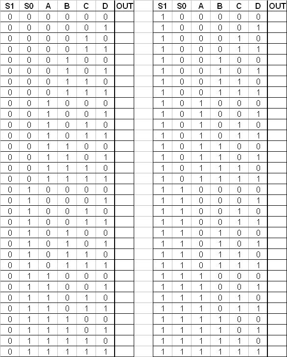
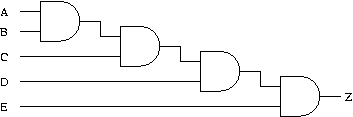
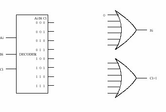
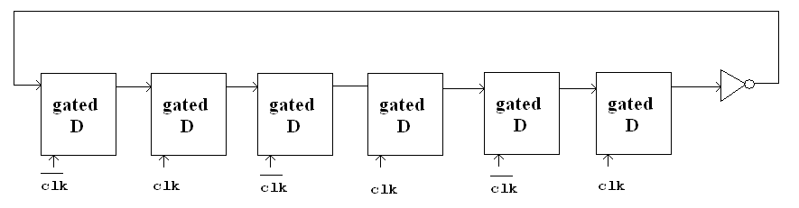
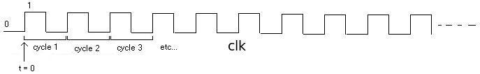

Perform the following logical operations. Express your answers in hexadecimal notation.
- xABCD OR x9876
- x1234 XOR x1234
- xFEED AND (NOT(xBEEF))
Fill in the truth table for the equations given. The first line is done as an example.
Q2 = NOT ((Y OR Z) AND (X AND Y AND Z))
X Y Z |
Q1 Q2 |
|---|---|
0 0 0 |
0 1 |
|
|
|
|
|
|
|
|
|
|
|
|
|
|
|
|
|
|
|
|
|
A<=Has Professor Patt been uncomfortably warm this summer?
B<=Does Professor Patt want a new, fresher look?
C<=Are beards “cool”?
We think that Professor Patt should shave his beard if he has been uncomfortably warm this summer. He should also shave his beard if he wants a new fresher look and beards are not “cool”.
Write the logic equation for Y in terms of A,B,C that solves this problem, and draw the gate-level diagram.
- (3.11) Draw a transistor-level diagram for a three-input AND gate and a three-input OR gate. Do this by extending the designs from Figures 3.6a and 3.7a. (Figures can be found in the book on pages 56 & 57 respectively).
- Replace the transistors in your diagrams from part (a)
with either a wire or no wire to reflect the circuit’s operation when
the following inputs are applied:
-
A = 1, B = 0, C = 0
- The transistor circuit shown below produces the accompanying truth table. The inputs to some of the gates of the transistors are not specified. Also, the outputs for some of the input combinations of the truth table are not specified. Complete both specifications. i.e., all transistors will have their gates properly labeled with either A, B, or C,
and all rows of the truth table will have a 0 or 1 specified as the output.

Figure 1
For example, in part a, the missing item is X. That is 0 OR 0 = 0 and 0 OR 1 = 1.
- 0 OR X = ___
- 1 OR X = ___
- 0 AND X = ___
- 1 AND X = ___
- __ XOR X = X
Logic circuit 1 in Figure 3.36 (page 87 of the book) has inputs A, B, C. Logic circuit 2 in Figure 3.37 (page 87 of the book) has inputs A and B. Both logic circuits have an output D. There is a fundamental difference between the behavioral characteristics of these two circuits. What is it? Hint: What happens when the voltage at input A goes from 0 to 1 in both circuits?
A) Implement a 4-to-1 mux using only 2-to-1 muxes making sure to properly connect all of the terminals. Remember that you will have 4 inputs (A, B, C, and D), 2 control signals (S1 and S0), and 1 output (OUT). After implementing the 4-1 mux, fill in the truth table below.
B) Implement F = A xor B using ONLY two 2-to-1 muxes. You are not allowed to use a not gate (A' and B' are not available).

Say the speed of a logic structure depends on the largest number of logic gates through which any of the inputs must propagate to reach an output. Assume that a NOT, an AND, and an OR gate all count as one gate delay. For example, the propagation delay for a two-input decoder shown in Figure 3.11 is 2 because some inputs propagate through two gates.
- What is the propagation delay for the two-input mux shown in Figure 3.12 (page 61)?
- What is the propagation delay for the 4-bit adder shown in Figure 3.16 (page 63)?
-
Can you reduce the propagation delay for the circuit shown in Figure 3
by implementing the equation in a different way? If so, how?

Figure 2
Recall that the adder was built with individual "slices" that produced a sum bit and carryout bit based on the two operand bits A and B and the carryin bit. We called such an element a full-adder. Suppose we have a 3-to-8 decoder and two six-input OR gates, as shown in Figure 3 below. Can we connect them so that we have a full-adder? If so, please do. (Hint: If an input to an OR gate is not needed, we can simply put an input 0 on it and it will have no effect on anything. For example, see the figure below.)

Figure 3
Problem description revised on 09/24/2013 We wish to design a controller for an elevator such that if you push a button for a desired floor, the controller will output the floor number that the elevator should go to. However, to deter lazy people from going up or down one floor, if you push the button for the next floor (up or down), the elevator will stay on its current floor. If you push the button for the same floor that you're currently on, the controller will output the current floor number. There are four floors in the building.
Your job: construct a complete truth table for the elevator controller. It is not necessary to draw the logic here; the truth table is sufficient.
Hint: What information does the controller need in order to output the floor to go to?Hint: How many input bits will that require.
Hint: How many output bits will the controller have to supply.
We want to make a state machine for the scoreboard of the Texas vs. Oklahoma Football game. The following information is required to determine the state of the game:
1. Score: 0 to 99 points for each team
2. Down: 1, 2, 3, or 4
3. Yards to gain: 0 to 99
4. Quarter: 1, 2, 3, 4
5. Yardline: any number from Home 0 to Home 49, Visitor 0 to Visitor 49, 50
6. Possesion: Home, Visitor
7. Time remaining: any number from 0:00 to 15:00, where m:s (minutes, seconds)
(a) What is the minimum number of bits that we need to use to store the state required?
(b) Suppose we make a separate logic circuit for each of the seven elements on the scoreboard, how many bits would it then take to store the state of the scoreboard?
(c) Why might the method of part b be a better way to specify the state than the method of part a?
Shown below is a partially completed state diagram of a finite state machine that takes an input string of H (heads) ant T (tails) and produces an output of 1 every time the string HTHH occurs.

Figure 4
- Complete the state diagram of the finite state machine that will do this for any input sequence of any length
- If this state machine is implemented with a sequential logic circuit how many state variables will be needed?
A logic circuit consisting of 6 gated D latches and 1 inverter is shown below:

Figure 5

Figure 6
Question: What is the state after 50 cyles. How many cycles does it take for a specific state to show up again?
(3.31)
If a particular computer has 8 byte addressability and a 4 bit address space,
how many bytes of memory does that computer have?
Draw the transistor level circuit of a 2 input XOR gate